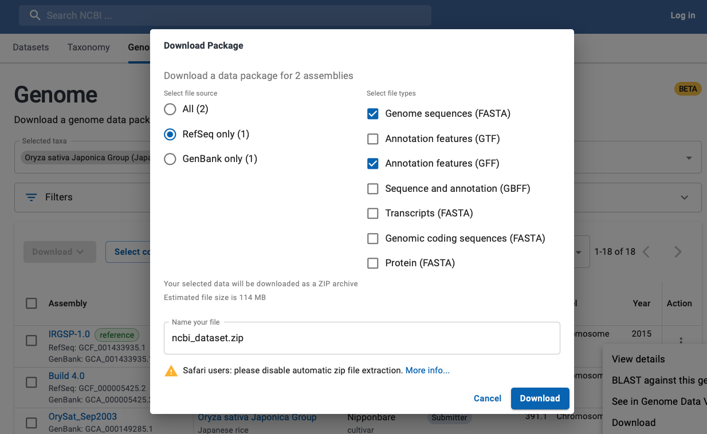

|
|
NCBI convert to SyMAP |


|
|
|
|||
NCBI supplies FASTA formatted files for genome sequence and GFF3 formatted files for the annotation, where FASTA and GFF3 files are the input to SyMAP. However, using them directly can cause problems. The following provides a simple scheme to produce only the files necessary.
Contents
|
|
Download
- Go to NCBI.
- As shown in Fig 1:
- Select "Genome" from the pull-down at the top.
- Enter you genome name followed by "Search". You should see a page similar to Fig 2.
- The following are two approaches to download the FASTA and GFF files:
- As shown in Fig 2:
- Use the genome link beside the "Download sequences in FASTA format for genome,..."
- Use the GFF link beside the "Download genome annotation in GFF...".
- Process as described in Convert A.
- As shown in Fig 2 and Fig 3:
- Go to the NCBI Datasets page (link at bottom of Fig 2). This will bring up a window as shown in the background of Fig 3.
- Select the assembly you want, then click on the Action dots, which brings up a menu; select Download. That brings up a window as shown in Fig 3.
- Select the file source, then genome FASTA and annotation GFF for download.
- Process as described in Convert B.
- As shown in Fig 2:
If NCBI only provides the Genbank format, try using bioconvert to convert to GFF3, followed by the SyMAP converter. Alternatively, try Galaxy.

Fig 1. Search the NCBI site.

Fig 2. Download A: download the genome and GFF files.

Fig 3. Download B: from NCBI Datasets, select the genome and GFF files.
{kind=link}
ConvertNCBI optional flags
| Flag | Description | Details | Default |
| -s | Include Scaffolds | Include scaffolds in the output. See section Scaffolds | No scaffolds |
| -m | Hard-mask | NCBI genome sequences are soft-masked (generally for download A only), which is changed to hard masked | Leave as soft-mask |
| -l | Use linkage groups | Search 'linkage' instead of 'chromosome' | Use chromosomes |
| -v | Verbose | Print out header lines of skipped sequences | No print |
Beware: There are variations in the text associated with the FASTA ">" header lines. The rules used by this script are as follows:
- If the ">" line contains "chromosome N", where N={number, X, Y or roman numeral}, than it is identified as such.
- If the ">" line contains "scaffold" or "contig", than it is identified as a scaffold (if "chromosome" is also on the line, it is still treated as a scaffold).
- All other ">" entries are considered "other".
zgrep ">" [prefix]._genomic.fna.gzThis shows you the lines and confirms that the above rules will work for your species. If not, then you will need to edit the script to work (or ask me to at symap@agcol.arizona.edu).
Convert files | Go to top |
Convert files from FASTA and GFF (download A)
- Go to the symap_5/data/seq directory.
- Make a subdirectory for your species and move the FASTA and GFF files into the directory.
- From the seq directory, type the following at the command line to copy the ConvertNCBI script:
cp ../../scripts/ConvertNCBI*.class . chmod 755 *.class
- Execute
java ConvertNCBI <species>
Example
From the symap_5 directory:> cd data/seq > mkdir riceA > cd riceA > mv ~/Download/GCF_001433935.1_IRGSP-1.0_genomic.fna.gz . > mv ~/Download/GCF_001433935.1_IRGSP-1.0_genomic.gff.gz . > cd .. > cp ../../scripts/ConvertNCBI*.class . > chmod 755 *.class > java ConvertNCBI riceAThis results in the following contents:
data/seq
ConvertNCBI.class
ConvertNCBI$Gene.class
data/seq/riceA/
GCF_001433935.1_IRGSP-1.0_genomic.fna.gz
GCF_001433935.1_IRGSP-1.0_genomic.gff.gz
annotation/
anno.gff
gap.gff
sequence/
genomic.fna
The output gives useful details of the annotation (e.g. see riceA details);
if the details do not appear right, you may need to edit the script for your genomes.
Convert files from ncbi_dataset.zip (download B)
This approach does not seem to soft-mask the sequence. Also, you need to check the resulting directory to make sure there is just one sub-directory.Follow all steps from Download A, except for step 2, do the following:
- Make a subdirectory for your species and move the ncbi_dataset.zip file to the species directory and unzip it.
Example
From the symap_5 directory:> cd data/seq > mkdir riceB > cd riceB > mv ~/Download/ncbi_dataset.zip . unzip ncbi_dataset.zip Archive: ncbi_dataset.zip inflating: README.md inflating: ncbi_dataset/data/assembly_data_report.jsonl inflating: ncbi_dataset/data/GCA_001433935.1/chr1.fna inflating: ncbi_dataset/data/GCA_001433935.1/chr2.fna ... inflating: ncbi_dataset/data/GCA_001433935.1/genomic.gff inflating: ncbi_dataset/data/GCA_001433935.1/sequence_report.jsonl inflating: ncbi_dataset/data/dataset_catalog.json > cd .. > cp ../../scripts/ConvertNCBI*.class . > chmod 755 *.class > java ConvertNCBI riceBThis results in the following contents (some NCBI files not listed):
data/seq ConvertNCBI.class ConvertNCBI$Gene.class data/seq/riceB/ ncbi_dataset.zip ncbi_dataset/data/GCA_001433935.1/ chr1.fna ... annotation/ anno.gff gap.gff sequence/ genomic.fnaThe output gives useful details of the annotation (e.g. see riceB details); if the details do not appear right, you may need to edit the script for your genomes.
Load files into SyMAP | Go to top |
Scaffolds | Go to top |
java ConvertNCBI rice -sThis will include all chromosomes (prefix 'C') and scaffolds (prefix 's') in the genomic.fna file. Beware, there can be many tiny scaffolds. If they all aligned in SyMAP, it causes the display to be very cluttered. Hence, it is best to just align the largest ones (e.g. the longest 30); merge them if possible, then try the smaller ones. You should set the following SyMAP project parameters:
- grp_prefix needs to be blank as there is no common prefix now.
- min_size should be set to only load the largest scaffolds. To determine the value to use, run the
lenFasta.pl script,
e.g. from the seq directory and using rice as an example:
cp ../../scripts/lenFasta.pl . perl lenFasta.pl riceA/sequence/genomic.fna
Read riceA/sequence/genomic.fna and print sorted lengths Read 55 sequences N Length Seqid 1 43270923 >C01 NC_029256.1 2 36413819 >C03 NC_029258.1 3 35937250 >C02 NC_029257.1 ... Values for min_len (assuming no duplicate lengths): #Seqs min_len 10 27531856 20 19457 30 11447 40 10311 50 7140To align the top 30 sequences (12 chromosomes, 18 of the largest scaffolds), this says to set min_size to 11447.
Editing the script | Go to top |
Once you make your changes, execute:
javac ConvertNCBI.javaYou will need to have JDK installed to use the 'javac' command.
What the ConvertNCBI script does | Go to top |
- Reads the file ending in '.fna.gz' (or '.fna') and writes a new file called sequence/genomic.fna with the following changes:
- Sequences must have the word "chromosome" in their ">" header line in order to be copied (unless -l or -s flags).
- The header line is replaced with ">ChrN", where N comes from the header line "chromosome N", e.g.
"chromosome 1", etc.
For example,
>NC_029256.1 Oryza sativa Japonica Group cultivar Nipponbare chromosome 1, IRGSP-1.0
is replaced with:>Chr1 NC_029256.1
- Gaps of >30,000 are written to the annotation/gap.gff file (30,000 is hard-coded in ConvertNCBI script).
- Reads the file ending in 'gff.gz' (or .gff) and writes the file annotation/anno.gff. The
gff3 format
has 9 columns, where the first is the 'seqid', the third is the 'type' (e.g. feature 'gene'), the
last column is a semicolon-delimited keyword=value attribute list. The input file is processed as follows:
- The type=gene with attribute gene-biotype=protein-coding are processed.
The gene line is written to the anno.gff file with the following changes:
- The first column 'seqid' is replace with the 'ChrN' value assigned when reading the '.fna' file.
- A subset of the attributes are written, where the product keyword value is modified as follows:
- If there are multiple mRNA lines for a gene where the values are different, they are concatenated together.
- If there are multiple mRNA lines for a gene where
the only difference is the variant, then only the variant difference is show, e.g.
product=monocopper oxidase-like protein SKU5%2C transcript variant X2, X1, X3
- The first type=mRNA line for a gene is written to the anno.gff file followed by its type=exon, where they each are written with the new seqid and a subset of the attributes.
- The type=gene with attribute gene-biotype=protein-coding are processed.
The gene line is written to the anno.gff file with the following changes: